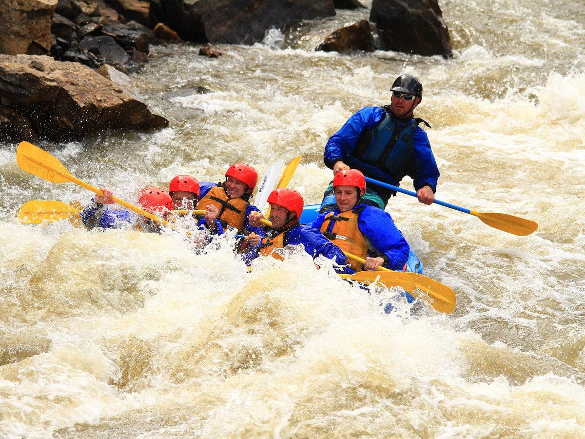
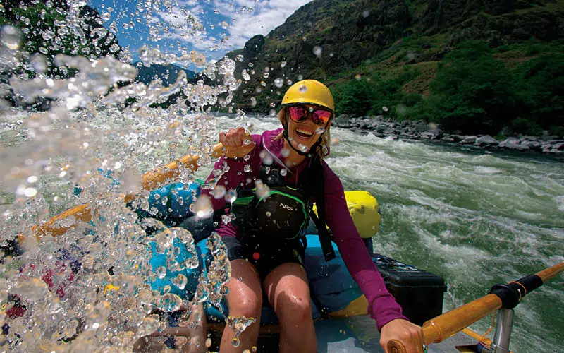
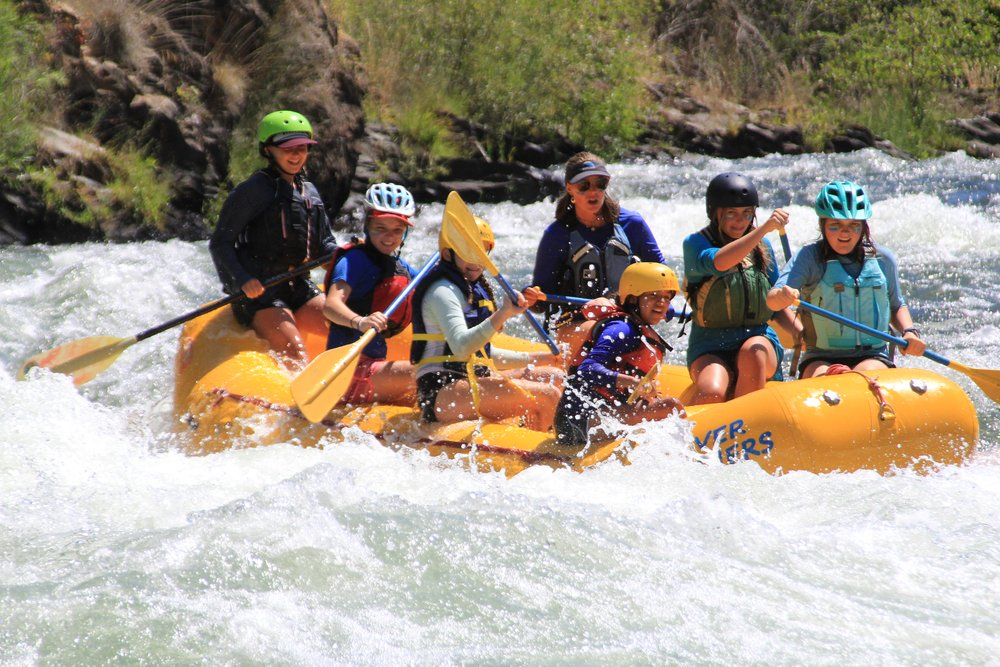
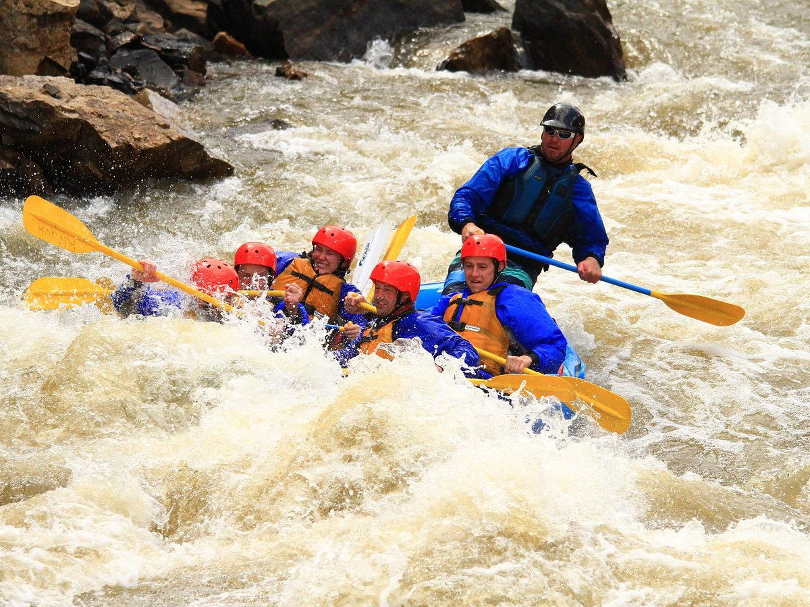
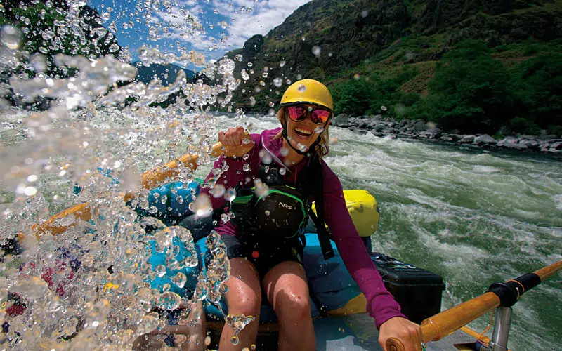
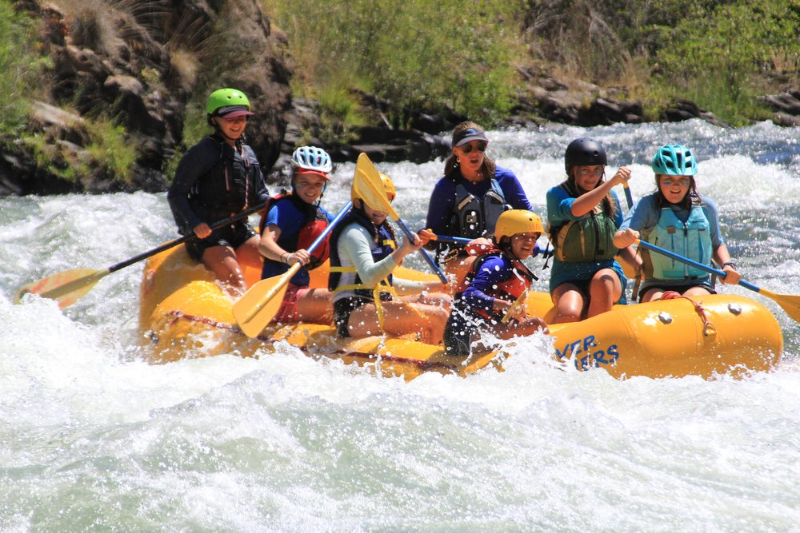

Cowabunga Water Rafting is a company that is dedicated to providing thrilling and unforgettable experiences for all adventure-seekers. Our purpose is to inspire people to connect with nature and push their limits, while promoting environmental awareness and responsibility. Our mission is to provide a safe and exciting adventure that exceeds our customers' expectations, while preserving the natural beauty of the rivers we operate on.
 




